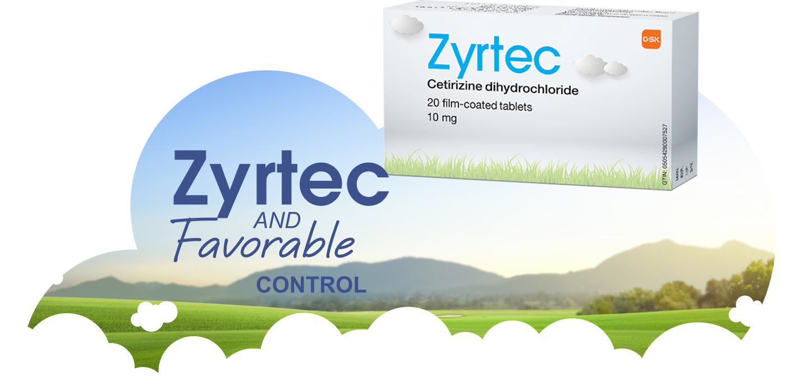
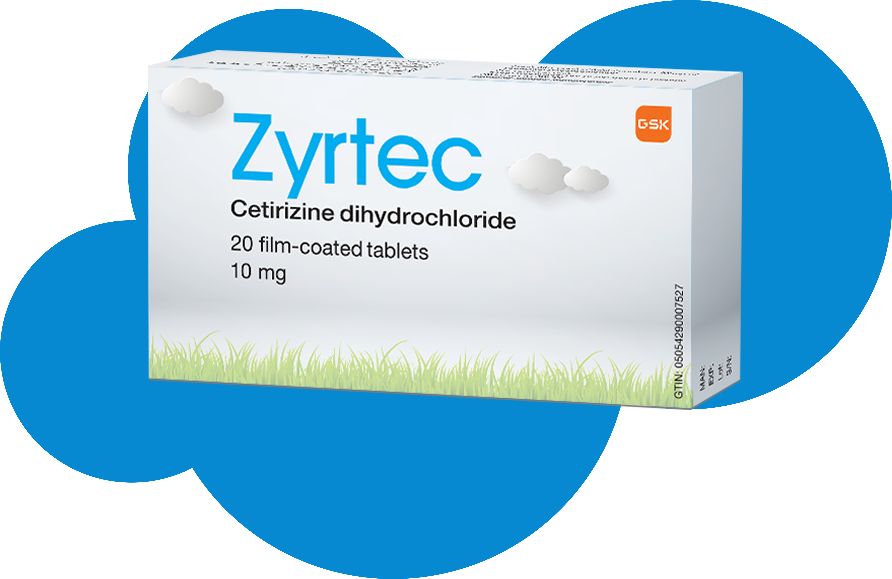

ZYRTEC is an over-the-counter antihistaminic medication approved by the U.S. Food and Drug Administration (FDA).4
ZYRTEC is used to treat symptoms associated with allergic conditions, such as:
- Nasal and ocular symptoms of seasonal and perennial allergic rhinitis.
- Rashes and itching of chronic urticaria (hives).1
Fast Onset and Long-lasting Relief with ZYRTEC2
When you're dealing with allergy symptoms & you want a fast relief, THINK ABOUT ZYRTEC.2
With ZYRTEC, you can start feeling relief within 20 minutes* on the first day, and it provides 24-hour relief that lasts all day and night.2
ZYRTEC For All Family Members
ZYRTEC is recommended for1,2
Children
Children aged from 6 to 12 years
Children over 12 years of age
Elderly
How Does ZYRTEC Work?

Allergies happen when the immune system reacts to a foreign substance that gets inside the body.5
ZYRTEC is a potent antihistaminic and selective antagonist of peripheral H1-receptors.2,4

ZYRTEC Safety
Like all medicines, ZYRTEC can cause side effects, but not everybody gets them.1
Before taking ZYRTEC, it's important to speak to your doctor if you have allergies, are taking other medications, have kidney or liver disease, or if you are pregnant or breastfeeding.1
ZYRTEC's
relief lasts for at least 24 hours, allowing for convenient once daily dosing.2
*Studies in healthy volunteers show that cetirizine, at doses of 5 and 10 mg strongly inhibits the wheal and flare reactions induced by very high concentrations of histamine into the skin, but the correlation with efficacy is not established.
Consult your doctor/pharmacist before using the product.
Trademarks are owned by or licensed to the GSK group of companies. ©2026 GSK group of companies or its licensor. all rights reserved
Zyrtec at the recommended dose is unlikely to affect your ability to drive or use machines. However, some patients being treated with Zyrtec may feel drowsy, tired or weak1
The illustration used in this material is an artistic depiction and does not presume the models suffer from any disease or was subject to any medical intervention.
This content is intended for UAE consumers only.
If you get any side effects, talk to your doctor, pharmacist or nurse.
You can also report possible side effects for GSK medicines directly via
gulf.safety@gsk.com.
Any GSK medicine quality complaints could be reported to GSK Quality mailbox
Gulf.ProductQualityComplaints@gsk.com
References:
- Zyrtec, Package Information Leaflet, October 2024.
- Zyrtec, Abbreviated Prescribing Information, Gulf, September 2024.
- Portnoy JM, Dinakar C. Review of cetirizine hydrochloride for the treatment of allergic disorders. Expert Opin Pharmacother. 2004 Jan;5(1):125-35.
- What Is Cetirizine and How Does It Work?/ Rx list/ https://www.rxlist.com/cetirizine/generic-drug.htm/ Retrieved/ December 2025.
- Allergies/ Mayo clinic/ https://www.mayoclinic.org/diseases-conditions/allergies/symptoms-causes/syc-20351497/ Retrieved/ December 2025.
GSK does not recommend, endorse, or accept liability for the site.